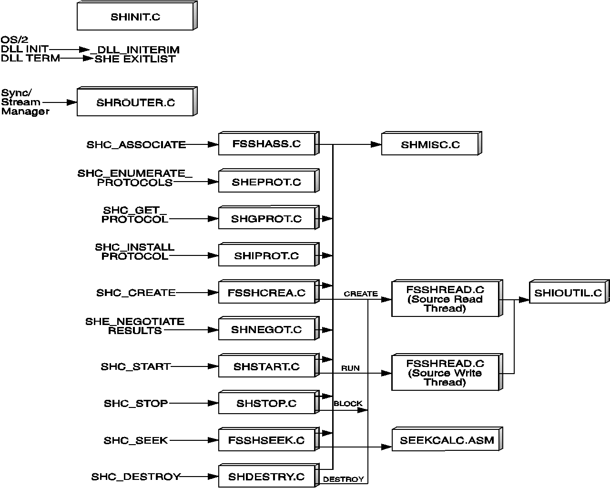

The following figure illustrates the outline of the file system stream handler (FSSHT.DLL).
The descriptions for the sample file system stream handler modules shown in the example in section File System Stream Handler Modules are contained in the following table.
┌───────────────┬───────────────────────────────────────────────────────┐ │Procedure Name │Description │ ├───────────────┼───────────────────────────────────────────────────────┤ │SHINIT.C │Receives control when FSSHT.DLL is loaded and performs │ │ │the following functions: │ │ │DLL_INITTERM Initialization routine to │ │ │ register the stream handler │ │ │ with the Sync/Stream Manager │ │ │ (SSM), allocate heap memory, │ │ │ and create mutex semaphores. │ │ │SHEXITLIST Termination routine to │ │ │ deregister the stream handler, │ │ │ destroy any active streams, │ │ │ reload heap memory, and close │ │ │ mutex semaphores. │ ├───────────────┼───────────────────────────────────────────────────────┤ │SHROUTER.C │Receives the stream handler command (SHC) messages from│ │ │SSM and routes them to the appropriate low-level │ │ │routines. │ ├───────────────┼───────────────────────────────────────────────────────┤ │FSSHASS.C │Processes the SHC_ASSOCIATE stream handler command │ │ │message to associate an object (file handler, CD ROM │ │ │drive letter, and so on) with a data stream. │ ├───────────────┼───────────────────────────────────────────────────────┤ │SHEPROT.C │Processes the SHC_ENUMERATE stream handler command │ │ │message to return a list of stream protocols for a │ │ │given stream. │ ├───────────────┼───────────────────────────────────────────────────────┤ │SHGPROT.C │Processes the SHC_GET_PROTOCOL stream handler command │ │ │message to return a stream protocol control block │ │ │(SPCB) for a given data type. │ ├───────────────┼───────────────────────────────────────────────────────┤ │SHIPROT.C │Processes the SHC_INSTALL_PROTOCOL stream handler │ │ │command message to install or replace an SPCB for a │ │ │given data type. │ ├───────────────┼───────────────────────────────────────────────────────┤ │FSSHCREA.C │Processes the SHC_CREATE stream handler command message│ │ │to create a stream instance for a given data type and │ │ │subtype. If the create is for a source stream handler, │ │ │a read thread in FSSHREAD.C is created. Otherwise a │ │ │write thread is created in FSSHWRIT.C for a target │ │ │stream handler. │ ├───────────────┼───────────────────────────────────────────────────────┤ │SHNEGOT.C │Processes the SHC_NEGOTIATE_RESULTS stream handler │ │ │command message to save the negotiated SPCB for a given│ │ │stream instance. │ ├───────────────┼───────────────────────────────────────────────────────┤ │SHSTART.C │Processes the SHC_START stream handler command message │ │ │to start the data streaming for a given stream │ │ │instance. For a source stream handler, the read thread │ │ │in FSSHREAD.C is run. For a target stream handler, the │ │ │write thread in FSSHWRIT.C is run. │ ├───────────────┼───────────────────────────────────────────────────────┤ │SHSTOP.C │Processes the SHC_STOP stream handler command message │ │ │to stop the data streaming for a given stream instance.│ │ │For a source stream handler, the read thread in all the│ │ │buffers is either discarded (STOP DISCARD) or returned │ │ │to SSM (STOP FLUSH). For a target stream handler, the │ │ │write thread in FSSHWRIT.C is blocked, with buffers │ │ │either discarded or flushed. │ ├───────────────┼───────────────────────────────────────────────────────┤ │FSSHSEEK.C │Processes the SHC_SEEK stream handler command message │ │ │to seek to a specified point in the stream object. The │ │ │seek can be from the beginning of the file, the current│ │ │position, or the end o the file. The seek point can be │ │ │specified in bytes offset or MMTIME units. This module │ │ │interfaces with low-level routines in SEEKCALC.ASM to │ │ │perform conversion from MMTIME values to bytes, and │ │ │with mmioSeek to perform the actual seek in the object.│ ├───────────────┼───────────────────────────────────────────────────────┤ │SEEKCALC.ASM │Performs the low-level conversions of MMTIME to bytes, │ │ │and bytes to MMTIME, needed by FSSHSEEK.C. │ ├───────────────┼───────────────────────────────────────────────────────┤ │SHDESTRY.C │Processes the SHC_DESTROY stream handler command │ │ │message to remove a stream instance. Either the read │ │ │thread in FSSHREAD.C or the write thread in FSSHWRIT.C │ │ │is terminated when this message is received. │ ├───────────────┼───────────────────────────────────────────────────────┤ │SHMISC.C │Supporting routines used by the other stream handler │ │ │modules; for example, searching the stream instance │ │ │chain to find a particular stream instance, finding an │ │ │extended stream protocol control block (SPCB), and │ │ │deallocating a stream instance. │ ├───────────────┼───────────────────────────────────────────────────────┤ │FSSHREAD.C │Reads an object from the file system. A read thread is │ │ │created when the SHC_CREATE message is received in │ │ │FSSHCREA.C and destroyed when the SHC_DESTROY message │ │ │is received in SHDESTRY.C. The read is accomplished by │ │ │interfacing with a mmioRead routine and low-level │ │ │routines in SHIOUTIL.C to check processing flags and │ │ │report events to SSM. │ ├───────────────┼───────────────────────────────────────────────────────┤ │SHIOUTIL.C │Low-level routines used by FSSHREAD.C and FSSHWRIT.C │ │ │modules. This module performs checks of processing │ │ │flags and also reports processing events to SSM. │ ├───────────────┼───────────────────────────────────────────────────────┤ │FSSHDAT.C │Global data declaration for the stream handler │ ├───────────────┼───────────────────────────────────────────────────────┤ │makefile │Makefile to build FSSHT.DLL sample file system stream │ │ │handler │ └───────────────┴───────────────────────────────────────────────────────┘